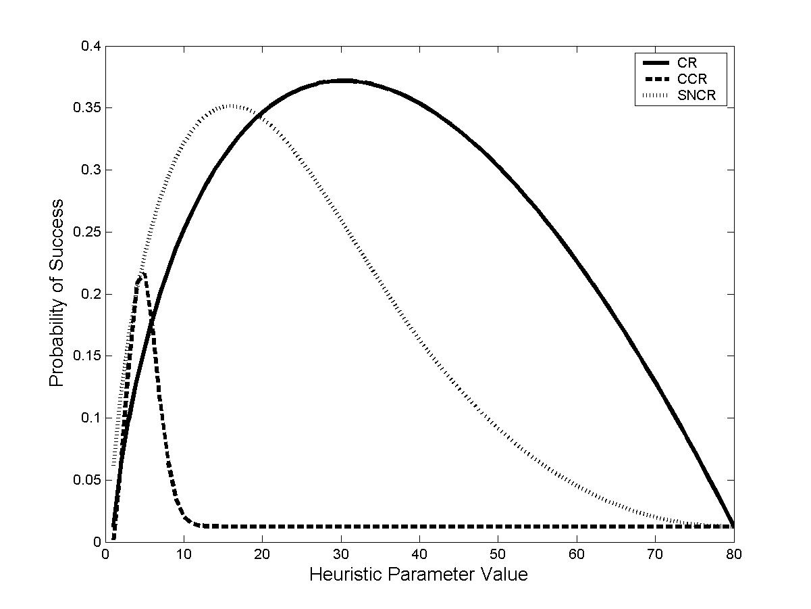
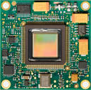
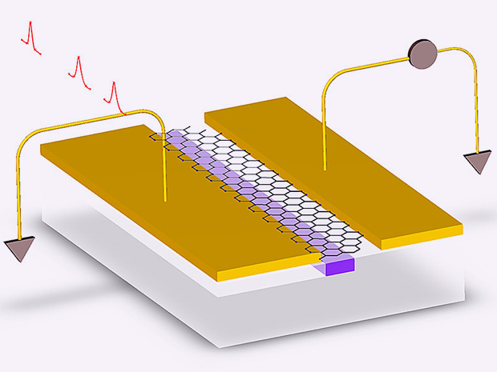
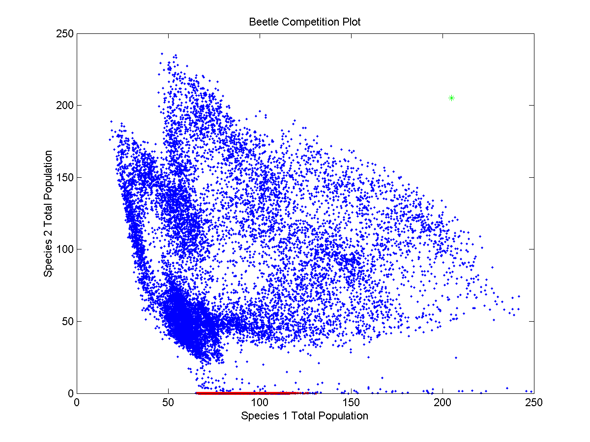
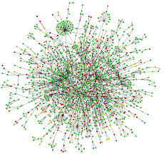
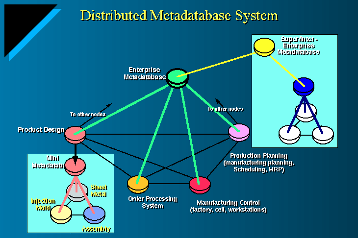
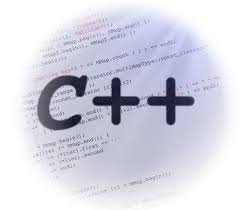

-

Fast Convergence PageRank in Hadoop
Calculated PageRank in MapReduce by node-by-node approach and blocked matrix multiplication
Tested it on both local Ubuntu system and AWS Elastic MapReduce which performed a large-scale graph computation
-
Digital VLSI Design Optimization via Machine Learning
Use machine-learning algorithms to automatically optimize the key parameters of digital circuits
Developed a software package that uses Markov-chain Monte-Carlo (MCMC) methods to automatically determine the key design parameters of digital signal processing circuits, such as the arithmetic precision
-
Data Visualization on Web Page for Presidential Partisanship and Temporal Relevance
Crawled the web for all speeches the past ten presidents made, used Python library RAKE to extract keywords and key phrases
Analyzed and categorized words and phrases by president, year, and political party
Created interactive web UI to represent the results by HTML, CSS and Javascript
-

Distributed, Scalable and Fault-tolerant Website Maintaining Sessions
Built a distributed, scalable and fault-tolerant version of the website using AWS Elastic Beanstalk together with UDP networking to maintain and display a small session state, with session timeout implemented
Wrote and deployed Servlets and JSPs code for processing client requests and kept an in-memory session data table exposed through a Remote Procedure Call server interface
-
Data Visualization on Web Page for Titanic Survival Rate
Survival rate analysis based on passengers' age, gender, class and embark position and visualize statistical results into polymorphous graphs
Using d3 to analyze data and draw pictures. Building web page by HTML, CSS and Javascript
-
Comparison of Lyrical and Audio Features for Music Classification
Explored the classification and analysis of songs based on both lyrical and audio properties using different machine-learning algorithms and metrics
Determined commonalities in songs of a particular genre, or from a particular decade with SVM and Naive Bayes, using SVM-light and Python
-
Tags Prediction of Flickr images
Predicted the Flickr image tags given partial tags and developed its training, validation and prediction system
Utilized Naive Bayes to predict country tags and used method similar to k-nearest neighbor search to generate non-country tags, using Python and Matlab
-

Exploration of Variations for Secretary Problem
Explored the Secretary Problem (one of the classical Dynamic Programming problem) in depth, including standard problem and its variations
Design the Graphical User Interface to simulate this problem by Python
-

Research of ARM Based on 0.18μm Standard CMOS Technology
Primary group member, responsible for designing the integrated circuit
Implemented and simulated the FreeARM7 processor (a open source processor written by Verilog) based on FPGA by ISE and ModelSim
Established FPGA projects to display sentences on computer by rewriting files of Startup.s, Retarget.c and Serial.c and setting parameters of former FPGA
-

Research of Planar Optical Waveguide Isolator
Team Leader of the project
Published Analysis and Design of Planar Optical Waveguide Isolator as the Primary author
Motivated and led the 4 people team to prepare and characterize planar optical waveguide isolator based on Bi Doped YIG material
-

ECE 5555: Stochastic Systems: Estimation and Control
Fall 2014
-
ECE 4450: Computer Networks and Telecommunications
Fall 2014
-

ECE 5960: Graphic Models
Fall 2014
-
CS 5780: Machine Learning
Fall 2014
-
CS 4320: Introduction to Database Systems
Spring 2015
-

CS 5300: The Architecture of Large - Scale Information Systems
Spring 2015
-
CS 3300: Data-Driven Web Applications
Spring 2015
-
CS 4410: Operating Systems
Summer 2015
-

CS 2024: C++ Programming
Fall 2015
-
CS 1300: Introduction to Web Design and Programming
Fall 2015
-
CS 2850: Networks
Fall 2015
-
CS 5620: Introduction to Computer Graphics
Fall 2015